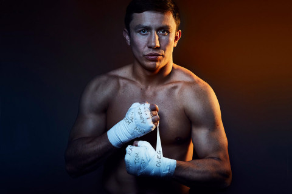

Головкин, Геннадий Геннадьевич
Геннадий Геннадьевич Головкин — казахский боксёр в средней весовой категории, многократный обладатель чемпионского титула, он родился 8 апреля 1982 года в Караганде. За свою жизнь спортсмен успешно провёл более 40 боёв. Двадцать шесть поединков закончились нокаутами, Геннадию удалось положить на спину всех противников. Иногда его называют GGG (Triple G), такой псевдоним связан с инициалами боксёра. Головкин известен по всему миру, на сегодняшний день он проживает в Лос-Анджелесе.
Лучший боксёр вне зависимости от весовой категории по версии журнала The Ring (27 сентября 2017 — 15 сентября 2018.). Лучший боксёр 2017 года по версии WBA,[4] WBC[5] и популярного издания Boxingnews24.com.
